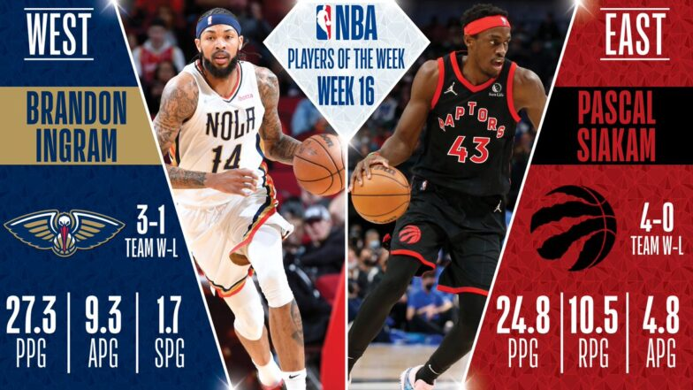
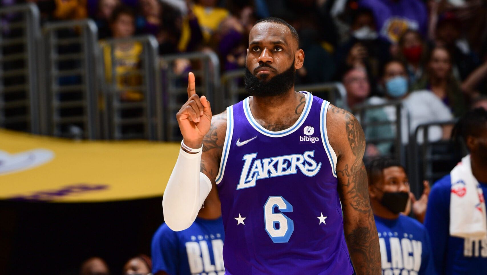

NBA ARTICLES
Top Stories
Siakam, Ingram named Players of the Week
The former All-Star forwards claim the honors for Week 16.
From NBA.com Staff
The Raptors forward Pascal Siakam has been named the Player of the Week for the Eastern Conference, while Pelicans forward Brandon Ingram earned the award in the Western Conference, the NBA announced today (via Twitter). It’s the first time this season that either Siakam or Ingram has been named Player of the Week.
Siakam’s Raptors improved their playoff outlook with a winning streak this week too. After going 4-0, Toronto now holds the sixth seed in the East, having moved ahead of Brooklyn. In the Raptors’ four victories, Siakam put up 24.8 PPG, 10.5 RPG, 4.8 APG, and 1.8 SPG on .493/.500/.806 shooting while averaging over 40 minutes per game.
New Orleans went 3-1 this week as Ingram averaged 27.3 points, 9.3 assists and 1.7 steals over three games. His best performance of the week came against the Houston Rockets on Feb. 6 when he logged 33 points, three rebounds and 12 assists in a 120-107 win. The Pelicans (21-32) are currently the No. 10 seed in the West standings.
Ingram returned from a five-game absence last Tuesday and led the Pelicans to three consecutive road wins in Detroit, Denver, and Houston, moving the team into the final play-in spot in the West. In those three games, Ingram averaged 27.3 points on .475/.400/.846 shooting and thrived as a play-maker, with 9.3 assists per game. He also chipped in 1.7 steals and 1.3 blocks per contest.
The Raptors’ standout forward helped Toronto to a 4-0 week with averages of 24.8 points, 10.5 rebounds and 4.8 assists. His best performance of the week came against the Atlanta Hawks on Feb. 4 when he logged 33 points, nine rebounds and four assists in a 125-114 win. The Raptors (28-23) are currently the No. 6 seed in the East standings.

10 things to know from the past 7 days in NBA
All-Star reserves announced, trade season gets underway, Embiid's streak continues and more from Week 16 in the NBA.
4 hours ago

Nash says Nets won't trade Harden
Brooklyn's coach shot down trade rumors involving the former MVP before the Nets...
24 hours ago

Cavs acquire swingman LeVert in deal with Pacers
Cleveland has traded Ricky Rubio to Indiana in the deal to acquire a talented...
9 hours ago
LeBron drops triple-double in victorious return
After missing 5 straight games, LeBron James returned to the lineup for L.A., which went 1-4 in his absence.
February 6, 2022

Power Rankings: Suns hold No. 1 spot
See where all 30 teams rank after the first 16 weeks of the 2021-22 season.